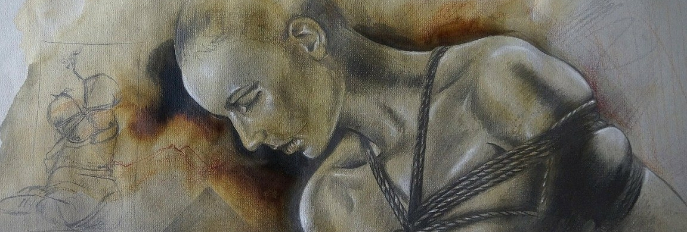
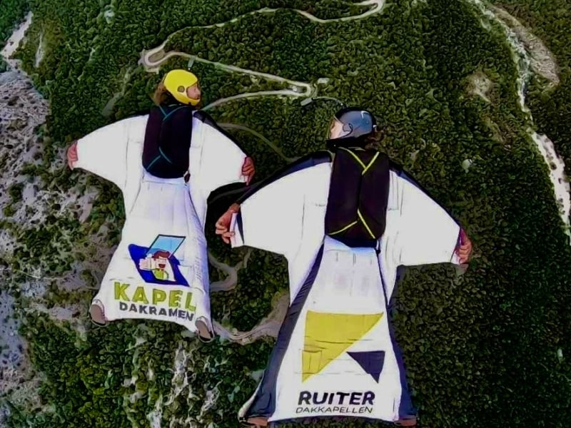

Een trancereis naar heling en bevrijding
Een beetje out of the box en out of the comfortzone — en daarom dus heel goed.
De weg naar innerlijke vrede
Shibari is een krachtige trancereis die je naar binnen laat gaan en in contact brengt met jezelf. Terwijl de touwen je omarmen, ervaar je een massage voor lichaam en geest — een unieke ervaring die zorgt voor fysieke en mentale heling.
Dit spirituele ritueel helpt je om op diepere lagen los te laten. De uitnodiging is om jezelf over te geven aan het moment, de controle los te laten en de mind even op pauze te zetten. In die overgave vind je bevrijding.
Zelf zie ik het als een trancereis, massage, gedwongen yoga, karate met jezelf — de hoogste vorm van loslaten en overgave in een veilige setting, zonder middelen. Net als ademwerk, maar nóg krachtiger.
Elke sessie is maatwerk
Thee & afstemming
We starten met een kopje thee en bespreken de mogelijkheden, wensen, verwachtingen en grenzen.
Rustig testen
De eerste keer starten we op de grond: 5 à 10 minuten testen we een paar dingen en bespreken we hoe het voelde en waar je meer of minder van wilt.
De reis
Op de grond, in de lucht of een combinatie. Tijdens de sessie blijven we in contact, zodat we de ervaring kunnen aanpassen waar nodig. Het is een samenspel waarin ik jou help dieper naar binnen en in trance te gaan.
De magie
Het doel is vaak een stretch- of pijnniveau tussen de 5 en 8. Hier gebeurt de magie: je lichaam komt in een staat van verhoogd bewustzijn en produceert endorfines en andere stoffen die helend werken — een natuurlijke manier om stress te verlichten en emotionele blokkades uit je systeem te verwijderen.
Knoopsessie
Kom alleen of met z'n tweeën. Je bent welkom voor een privésessie en je kunt altijd iemand meenemen.
Basics leren (± 3 uur)
Met maximaal 3 personen of alleen. Ik leer je hoe je met één knoopje al heel veel kunt doen. It's all energywork — rope is just a tool.

Hoe shibari mij vond
Een jaar of zeven geleden was ik op Ibiza op Instagram aan het scrollen toen ik Yulia vond, die shibari-sessies aanbood. Ik had er nog nooit van gehoord, maar zei tegen mijn vrouw: dit ga ik even testen. Ik heb een sterke mind en lichaam en kreeg precies de sessie die ik nodig had — full suspension, een uur lang.
Toen ik losgemaakt was, kwam er een energie en emotie vrij waar ik nog steeds van onder de indruk ben. Ik kon het binnenste van de aarde voelen en dat stroomde als een gek door mij heen. Mijn mind stond voor het eerst in mijn leven een uurtje op stand-by. Wauw!
Sindsdien heb ik vele sessies ondergaan, wat mij enorm heeft geholpen. Nu heb ik veel plezier in het geven van deze ervaring aan iedereen die dit kan gebruiken.
"De Theta-status is bereikt — de status waar de magie begint. Ik was ver van hier, op reis zonder iets gebruikt te hebben. Niet normaal zo helend."
Klaar om los te laten?
Zijn er vragen? Aarzel niet om contact op te nemen — we bespreken alles rustig vooraf.